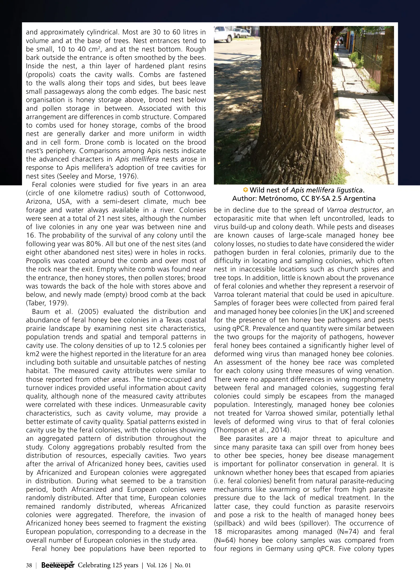

Wild nest of Apis mellifera ligustica.
Author: Metrónomo, CC BY-SA 2.5 Argentina
and approximately cylindrical. Most are 30 to 60 litres in
volume and at the base of trees. Nest entrances tend to
be small, 10 to 40 cm2, and at the nest bottom. Rough
bark outside the entrance is often smoothed by the bees.
Inside the nest, a thin layer of hardened plant resins
(propolis) coats the cavity walls. Combs are fastened
to the walls along their tops and sides, but bees leave
small passageways along the comb edges. The basic nest
organisation is honey storage above, brood nest below
and pollen storage in between. Associated with this
arrangement are differences in comb structure. Compared
to combs used for honey storage, combs of the brood
nest are generally darker and more uniform in width
and in cell form. Drone comb is located on the brood
nest’s periphery. Comparisons among Apis nests indicate
the advanced characters in Apis mellifera nests arose in
response to Apis mellifera’s adoption of tree cavities for
nest sites (Seeley and Morse, 1976).
Feral colonies were studied for five years in an area
(circle of one kilometre radius) south of Cottonwood,
Arizona, USA, with a semi-desert climate, much bee
forage and water always available in a river. Colonies
were seen at a total of 21 nest sites, although the number
of live colonies in any one year was between nine and
16. The probability of the survival of any colony until the
following year was 80%. All but one of the nest sites (and
eight other abandoned nest sites) were in holes in rocks.
Propolis was coated around the comb and over most of
the rock near the exit. Empty white comb was found near
the entrance, then honey stores, then pollen stores; brood
was towards the back of the hole with stores above and
below, and newly made (empty) brood comb at the back
(Taber, 1979).
Baum et al. (2005) evaluated the distribution and
abundance of feral honey bee colonies in a Texas coastal
prairie landscape by examining nest site characteristics,
population trends and spatial and temporal patterns in
cavity use. The colony densities of up to 12.5 colonies per
km2 were the highest reported in the literature for an area
including both suitable and unsuitable patches of nesting
habitat. The measured cavity attributes were similar to
those reported from other areas. The time-occupied and
turnover indices provided useful information about cavity
quality, although none of the measured cavity attributes
were correlated with these indices. Unmeasurable cavity
characteristics, such as cavity volume, may provide a
better estimate of cavity quality. Spatial patterns existed in
cavity use by the feral colonies, with the colonies showing
an aggregated pattern of distribution throughout the
study. Colony aggregations probably resulted from the
distribution of resources, especially cavities. Two years
after the arrival of Africanized honey bees, cavities used
by Africanized and European colonies were aggregated
in distribution. During what seemed to be a transition
period, both Africanized and European colonies were
randomly distributed. After that time, European colonies
remained randomly distributed, whereas Africanized
colonies were aggregated. Therefore, the invasion of
Africanized honey bees seemed to fragment the existing
European population, corresponding to a decrease in the
overall number of European colonies in the study area.
Feral honey bee populations have been reported to
be in decline due to the spread of Varroa destructor, an
ectoparasitic mite that when left uncontrolled, leads to
virus build-up and colony death. While pests and diseases
are known causes of large-scale managed honey bee
colony losses, no studies to date have considered the wider
pathogen burden in feral colonies, primarily due to the
difficulty in locating and sampling colonies, which often
nest in inaccessible locations such as church spires and
tree tops. In addition, little is known about the provenance
of feral colonies and whether they represent a reservoir of
Varroa tolerant material that could be used in apiculture.
Samples of forager bees were collected from paired feral
and managed honey bee colonies [in the UK] and screened
for the presence of ten honey bee pathogens and pests
using qPCR. Prevalence and quantity were similar between
the two groups for the majority of pathogens, however
feral honey bees contained a significantly higher level of
deformed wing virus than managed honey bee colonies.
An assessment of the honey bee race was completed
for each colony using three measures of wing venation.
There were no apparent differences in wing morphometry
between feral and managed colonies, suggesting feral
colonies could simply be escapees from the managed
population. Interestingly, managed honey bee colonies
not treated for Varroa showed similar, potentially lethal
levels of deformed wing virus to that of feral colonies
(Thompson et al., 2014).
Bee parasites are a major threat to apiculture and
since many parasite taxa can spill over from honey bees
to other bee species, honey bee disease management
is important for pollinator conservation in general. It is
unknown whether honey bees that escaped from apiaries
(i.e. feral colonies) benefit from natural parasite-reducing
mechanisms like swarming or suffer from high parasite
pressure due to the lack of medical treatment. In the
latter case, they could function as parasite reservoirs
and pose a risk to the health of managed honey bees
(spillback) and wild bees (spillover). The occurrence of
18 microparasites among managed (N=74) and feral
(N=64) honey bee colony samples was compared from
four regions in Germany using qPCR. Five colony types
38 |
Celebrating 125 years | Vol. 126 | No. 01